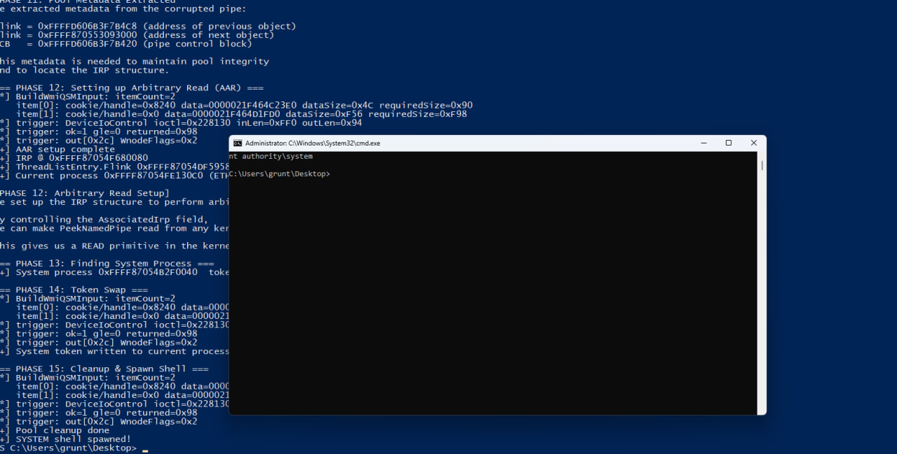

CVE-2026-42980: reversing y explotación del underflow en WMI del kernel de Windows¶
Contexto de publicación
Esta investigación fue desarrollada como parte de Binary Gecko Academy. Ricardo Narvaja me autorizó a publicar este material a partir de hoy, 2026-07-07.
Este artículo, producido como parte de Binary Gecko Academy y publicado con permiso de Ricardo Narvaja a partir de hoy, documenta el root cause técnico y la estrategia de explotación de
CVE-2026-42980, una vulnerabilidad de elevación local de privilegios en el
kernel de Windows dentro del subsistema WMI. El advisory público indica el impacto
y la clase de bug, pero no publica las funciones vulnerables, los IOCTLs ni la
aritmética exacta. Este write-up completa esos detalles a partir de patch diffing,
reversing estático y un exploit de laboratorio que llega a una shell interactiva
NT AUTHORITY\SYSTEM.

TL;DR¶
Los sitios vulnerables están en las rutas de serialización WMI dentro de
ntoskrnl.exe:
| Camino | IOCTL | Función vulnerable | Resta vulnerable |
|---|---|---|---|
| query de múltiples WMI data blocks | 0x22812C |
nt!WmipQueryAllDataMultiple |
OutputBufferLength -= AlignedSize en WmipQueryAllDataMultiple+0x29a |
| execute/query de una single instance varias veces | 0x228130 |
nt!WmipQuerySingleMultiple |
OutBufferSize -= AlignedActualSize en WmipQuerySingleMultiple+0x401 |
Ambos sitios mantienen un contador de 32 bits con el espacio restante del output.
Los builds vulnerables restan un tamaño alineado reportado por el provider sin
probar antes que ese tamaño sea menor o igual al contador restante. Si el tamaño
es mayor, el contador unsigned wrappea a un valor enorme. La siguiente etapa de
serialización WMI entonces cree que todavía hay espacio suficiente y escribe más
allá del SystemBuffer kernel asignado.
El exploit usa el camino 0x228130 (nt!WmipQuerySingleMultiple) porque ofrece
un trigger práctico in-box: la compuerta inicial de capacidad usa una estimación
del tamaño del item WNODE controlada por el caller, mientras que la resta posterior
usa el tamaño real serializado devuelto por el provider.
Patch diff: funciones vulnerables exactas¶
Al comparar el kernel vulnerable contra el parcheado, se ve que Microsoft cambió
ambos caminos WMI de la misma manera: reemplazó la resta no validada por una resta
saturada protegida por Feature_1045423416.
nt!WmipQueryAllDataMultiple (IOCTL 0x22812C)¶
El camino de query serializa múltiples bloques WMI y mantiene un remaining output length. En el build vulnerable, el loop hace esto:
AlignedSize = (QueryInfo[0] + 7) & 0xFFFFFFF8;
CurrentOutputBuffer = (char *)CurrentOutputBuffer + AlignedSize;
TotalSize += AlignedSize;
OutputBufferLength -= AlignedSize; // vulnerable: resta unsigned sin check
A nivel instrucción, la operación vulnerable es:
El build parcheado cambia esto por una forma saturada:
v = OutputBufferLength - AlignedSize;
if (Feature_1045423416__private_IsEnabledDeviceUsageNoInline())
v = -(unsigned int)(AlignedSize < OutputBufferLength) & v;
OutputBufferLength = v;
La máscara queda en 0xFFFFFFFF solamente cuando la resta no underflowea. Si
AlignedSize >= OutputBufferLength, la máscara queda en cero y el contador
restante se fuerza a 0 en vez de envolver.
nt!WmipQuerySingleMultiple (IOCTL 0x228130)¶
El camino explotado es el de single-instance/multiple-item detrás de:
El build vulnerable contiene el mismo bug aritmético:
AlignedActualSize = (ReturnedDataSize + 7) & 0xFFFFFFF8;
TotalRequiredSize += AlignedActualSize;
OutBufferSize -= AlignedActualSize; // vulnerable: resta unsigned sin check
El diff ubica el sitio vulnerable en:
y la operación de bajo nivel es equivalente a:
El build parcheado aplica el mismo patrón saturado:
t = OutBufferSize - AlignedActualSize;
if (Feature_1045423416__private_IsEnabledDeviceUsageNoInline())
t = -(unsigned int)(AlignedActualSize < OutBufferSize) & t;
OutBufferSize = t;
Esto confirma que ambas funciones vulnerables pertenecen al mismo bug: una resta sin check de un tamaño alineado controlado por el provider contra un contador de output restante.
Alcanzabilidad desde user mode¶
Las rutas vulnerables son alcanzables desde un proceso local normal a través del dispositivo WMI:
[user mode]
NtDeviceIoControlFile(\Device\WMIDataDevice, ioctl, ...)
-> nt!WmipIoControl
IOCTL 0x22812C -> nt!WmipQueryAllDataMultiple
IOCTL 0x228130 -> nt!WmipQuerySingleMultiple
-> nt!WmipQueryAllData / provider execution
-> nt!WmipForwardWmiIrp
-> WMI provider
Para el exploit final uso IOCTL 0x228130, porque el formato de request permite
preparar dos WNODE inputs:
- item 0: crea el underflow contable;
- item 1: materializa la escritura out-of-bounds con bytes controlados.
El PoC abre \Device\WMIDataDevice directamente y también usa WmiOpenBlock /
WmiQueryAllDataW desde advapi32.dll para descubrir instancias WMI vivas que
tengan una ventana de trigger usable.
La aritmética exacta del trigger¶
La condición explotable en WmipQuerySingleMultiple nace de un desacople entre
la estimación usada por la compuerta y el valor que se resta después.
Para cada item WNODE, la compuerta usa una estimación de tamaño de esta forma:
Para un nombre de instancia WMI, esa estimación queda ligada al tamaño del item / nombre controlado por el caller. Sin embargo, después de ejecutar el camino del provider, el caller resta el tamaño real del WNODE serializado:
La relación explotable es:
Eso significa que el item WNODE pasa el check inicial de capacidad, pero la resta posterior envuelve.
Una ventana concreta observada durante validación fue:
nameLen = 0x4c
requiredSize = (0x4c + 0x49) & ~7 = 0x90
R = 0x94
aligned = 0x98
slop = 4
gate: 0x90 <= 0x94 -> aceptado
subtract: 0x94 - 0x98 -> 0xFFFFFFFC
En otro build/perfil de laboratorio, el resolver dinámico eligió:
guid#156 = {2e2d2463-b537-4da7-8eee-51306f1f482f}
class = WmiMonitorConnectionParams
nameLen = 0x56
requiredSize = 0x98
R = 0x9c
aligned = 0xa0
slop = 4
overwriteOff = 0xf1e
El GUID exacto no es el root cause. Lo importante es la ventana medida:
ALIGN8(R) > R mientras la compuerta acepta el item.
Por qué el GUID puede cambiar¶
El PoC no depende de un provider mágico único. Incluye un dataset de GUIDs WMI y escanea dinámicamente ventanas usables en runtime. El provider elegido depende del build de Windows, perfil de VM, dispositivos habilitados, configuración de monitor, red y otros estados expuestos por WMI.
Ejemplos de providers exitosos o candidatos vistos en laboratorio:
| índice | GUID | clase WMI |
|---|---|---|
27 |
{0a214807-e35f-11d0-9692-00c04fc3358c} |
MSNdis_CoTransmitPduErrors |
156 |
{2e2d2463-b537-4da7-8eee-51306f1f482f} |
WmiMonitorConnectionParams |
463 |
{827c0a6f-feb0-11d0-bd26-00aa00b7b32a} |
MSPower_DeviceEnable |
506 |
{8f680850-a584-11d1-bf38-00a0c9062910} |
MSSmBios_RawSMBiosTables |
553 |
{98a2b9d7-94dd-496a-847e-67a5557a59f2} |
MS_SystemInformation |
658 |
{bdd865d1-d7c1-11d0-a501-00a0c9062910} |
MSDiskDriver_Performance |
Por eso el exploit calcula dinámicamente la geometría del overwrite. Si la
ventana cambia de R=0x94/aligned=0x98 a R=0x9c/aligned=0xa0, el offset de
overwrite también debe cambiar.
La fórmula central usada por el PoC es:
phase = (alignedActualSize + WMI_WNODE_INSTANCE_DATA_OFFSET) & (0x1000 - 1);
overwriteOffset = phase ? (0x1000 - phase) : 0;
con:
Para la ventana fallback 0x9c/0xa0, esto produce overwriteOff=0xf1e.
Convertir el wrap en escritura out-of-bounds¶
Después de que item 0 envuelve outRemaining, item 1 se procesa mientras el
kernel cree que el output buffer tiene una capacidad enorme. El WNODE de item 1
se serializa fuera del SystemBuffer kernel asignado.
La parte útil es la copia de instance data del WNODE. En el exploit, el atacante controla los bytes copiados en:
Por eso el código define:
El segundo WNODE se arma para que esa copia caiga sobre el header de una entrada vecina de named pipe.
Layout de pool y bucket matching¶
El objeto objetivo es una entrada de cola de datos de named pipe en npfs
(NP_DATA_QUEUE_ENTRY, tag NpFr). El exploit crea muchas pipes y las llena para
que el kernel reserve una secuencia estable de objetos de pipe del mismo tamaño.
Un detalle clave: la request WMI usa METHOD_BUFFERED. El kernel reserva el
SystemBuffer del IOCTL con:
Si el SystemBuffer de WMI y las entradas de cola rociadas no caen en el mismo
bucket de pool, la escritura OOB no aterriza confiablemente sobre el objeto
objetivo. Por eso el exploit rellena el input length WMI:
y usa writes de pipe que producen objetos efectivos de 0x1000 bytes. La
geometría importante es:
En la calibración de bucket chico, la misma idea aparece así:
Sprayed NpFr DQE = 0x30 + 0xb0 = 0xe0 -> chunk 0xf0
SystemBuffer before = max(0x38, 0x94) -> chunk 0xb0 (bucket incorrecto)
SystemBuffer after = max(0xe0, 0x94) -> chunk 0xf0 (bucket correcto)
El exploit público usa la geometría final grande 0xff0/0x1000.
Corrupción de la entrada de pipe¶
El primer trigger WMI corrompe la entrada de pipe objetivo e infla su tamaño
legible. Luego PeekNamedPipe puede leer más allá de los datos originales de la
pipe y filtrar metadata de kernel pool adyacente.
El exploit usa un offset estable de leak:
En ese offset extrae metadata de cola/lista de npfs necesaria para mantener consistente la estructura de la pipe mientras construye primitivas más fuertes.
Después del leak, el exploit vuelve a disparar WMI con otro payload para moldear
la entrada corrupta como una entrada respaldada por IRP. Eso permite que
PeekNamedPipe copie datos desde una dirección kernel elegida por el atacante,
dando lectura arbitraria de kernel.
De lectura arbitraria a token replacement¶
Con lectura arbitraria de kernel, el exploit localiza el proceso actual y el proceso SYSTEM. Los offsets se seleccionan según el build de Windows. El camino de alto nivel es:
IRP
-> ETHREAD mediante _IRP.Tail.Overlay.Thread
-> EPROCESS actual mediante KTHREAD/ApcState.Process
-> recorrido por ActiveProcessLinks
-> EPROCESS de PID 4
-> token de SYSTEM
Luego se usa una primitiva de escritura basada en completado de IRP para escribir
el token de SYSTEM dentro del campo EPROCESS.Token del proceso actual. Después
se repara la entrada de pipe corrupta y se lanza:
El proceso resultante corre como:
Fases del PoC público¶
El PoC público imprime la cadena como fases:
- detectar build de Windows y seleccionar offsets de estructuras kernel;
- resolver
NtFsControlFile,WmiOpenBlockyWmiQueryAllDataW; - reservar buffers WMI;
- hacer spray de named pipes;
- llenar pipes para crear objetos de pool con el tamaño buscado;
- liberar una pipe para crear un hueco;
- abrir
\Device\WMIDataDevice; - resolver una ventana WMI y enviar
IOCTL 0x228130; - encontrar la pipe corrupta;
- filtrar metadata npfs;
- construir lectura arbitraria;
- localizar PID 4 y leer el token de SYSTEM;
- escribir el token de SYSTEM en el proceso actual;
- reparar el objeto pipe;
- spawnear la shell SYSTEM.
Compilación¶
Desde el directorio public/:
o:
La salida queda en:
Impacto del parche¶
El parche corta la primitiva en la capa aritmética. Cuando el contador restante se satura a cero en vez de envolver, el siguiente WNODE no puede serializarse dentro del objeto de pool adyacente preparado por el atacante. Eso impide la corrupción de la cola de pipe, y por lo tanto también impide el leak, la lectura / escritura kernel y el token swap.
Binary Gecko Academy y permiso de publicación¶
Este trabajo fue producido como parte de Binary Gecko Academy. Lo publico con permiso de Ricardo Narvaja a partir de hoy, 2026-07-07.
Conclusión¶
CVE-2026-42980 no es simplemente “un bug en WMI”. Las funciones vulnerables son
nt!WmipQueryAllDataMultiple y nt!WmipQuerySingleMultiple; el IOCTL explotado
es 0x228130; y la primitiva clave es una resta sin check de un tamaño alineado
contra un contador de 32 bits de output restante. La explotabilidad aparece al
combinar ese wrap aritmético con instance data WNODE controlada y grooming preciso
de pool con npfs. El resultado final es una elevación local confiable a SYSTEM en
las configuraciones vulnerables de laboratorio probadas.